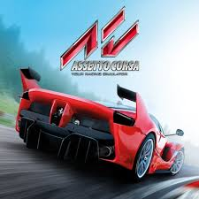

Assetto Corsa es un juego de simulación de carreras lanzado para PC en 2013 (Acceso Anticipado) y oficialmente en 2014. Fue desarrollado por el estudio italiano Kunos Simulazioni con el objetivo de recrear una experiencia de conducción realista. El juego destaca por sus autos licenciados, circuitos recreados mediante escaneo láser y una física avanzada que busca replicar de forma fiel el comportamiento de los vehículos.
Kunos Simulazioni es un estudio independiente radicado en Italia que surgió del trabajo previo en simuladores de automovilismo como netKar Pro y Ferrari Virtual Academy. Para Assetto Corsa desarrollaron un motor interno y se apoyaron en tecnología avanzada y colaboración con equipos reales de automovilismo para lograr el alto grado de realismo que el juego exige.
Aunque Assetto Corsa tiene ya varios años desde su lanzamiento original, sigue siendo popular gracias a su comunidad y al soporte de mods. Además, recientemente el estudio anunció proyectos sucesores como Assetto Corsa EVO, lo que indica que la franquicia sigue viva en desarrollo y expansión.